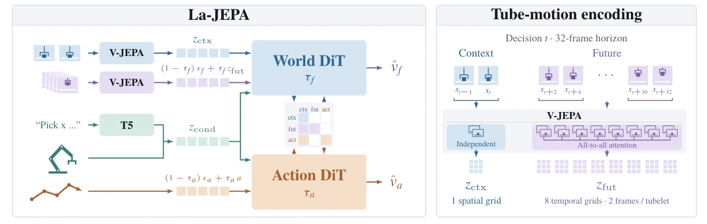

La-JEPA
Compact Robot Policies with Latent World Modeling
Compact robot policies trained in a pretrained JEPA feature space, learning actions and future features jointly while predicting only actions at deployment.

Approach
A policy transformer trained from scratch uses a pretrained V-JEPA 2.1 encoder. Joint feature and action prediction allows the policy architecture to be designed for control.
Reported results
La-JEPA L reaches 82.3% on LIBERO-Plus. Under the clean-trained RoboTwin 2.0 protocol, La-JEPA B reports 61.8% mean success across clean and randomized evaluations, in comparisons without embodied pretraining.
Scope
Physical evaluations cover four tasks on one setup. The results do not establish broad real-world parity with larger pretrained policies.